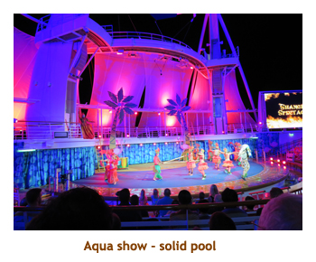
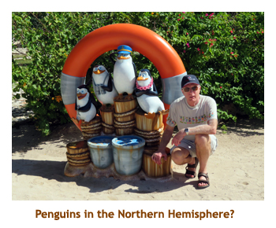

[ Home ] [ Travel ] [ Photography ] [ Pets ] [ Games] [ Rowing] [ Physics ]


Cruising on the Harmony of the Seas
Travel
Cruises
Past Cruises (Diaries)
Future Cruises
Rogues Galleries
Land Trips
Diaries (Land Trips)
Hawai'i - Big Island - 04'01
Hawai'i - Maui - 05'02
Hawai'i - Big Island - 04'03
Hawai'i - Kaua'i - 09'04
Hawai'i - Big Island - 04'06
Hawai'i - Maui - 04'06
Mainland China - 05'07
Phoenix, Arizona - 12'07
Greek Isles - 05'08
Hawai'i - Kaua'i - 09'08
Hawai'i - Big Island - 09'09
Hawai'i - Maui - 05'12
Hawai'i - Big Island - 04'13
Ireland - 08'13
Mexico - Cancun 11'13
France/Belgium/Lux 07'15
Hawai'i - Big Island - 05'17
England / Wales - 06'17
Hawai'i - Big Island - 09'19
Photography
Cameras
Underwater
Pets
Tara
Blackie
Whitey
Muffy
Ollie
Rusty
Fluffy
Rufus&Dufus
Games
Rowing
Physics
Rating (out of 5):
Ship  Food
Service
Itinerary
Food
Service
Itinerary 
We booked the Harmony OTS a long time ago as a placeholder for a really cheap deposit. It was our plan to convert it into another cruise sometime in the future. Fortunately our family (Dave and Joan, and Lynn) were impressed and jumped aboard to join us on the Harmony. We rethought the cruise and realized that we would enjoy the ship immensely and were soon looking forward to it. And, of course, it was a chance to visit with Marjorie's relatives too! Somewhere along the way Barry (Dave's brother) joined us too - the more the merrier!
The ship was awesome with so much to do for adults and for kids. The entertainment has to tbe among the best at sea - with a 90 minute "Grease" production in the main theater and two different water shows at the Aqua Theater topping the bill. Other productions of song and dance, a ventriloquist and ice shows were excellent as well. The only complaint I had overall was with the itinerary (same old, same old) but you don't do this cruise for the itinerary, it's the ship and the sunshine that really count!
The ship was full, with 5,877 passengers (double occupancy is 5,400). However, there is a ton of public space, so it didn't seem overly crowded. One place that was crowded was the Windjammer buffet, so we had most of our meals in other venues (MDR, Park cafe, Solarium, etc). Our Elite status gave Marjorie and me 3 drinks each at dinner time, so we spread those around our dinner table each night. Similar to what we have found on Celebrity, RCI has relaxed their dress code, replacing "formal" with "evening chique" which only suggests jacket and tie, but allows regular casual wear too. One "first" we noticed was several hand sinks at the entrance to the buffet Hand sanitizers are no longer enough.
We found that there was so much to do each day that I didn't go to the
gym even once. I don't think I suffered for it, though, and made up for
it on the following B2B cruise. Yes, I should quickly mention that a seven
day cruise just wasn't enough, so we booked a subsequent B2B cruise on the
Carnival Splendor. That's covered in a
separate diary.
Another (Caribbean) first was that we didn't attempt to snorkel at any of the ports
along the way. This was just an "enjoy the ship" and sunshine cruise.
Pre-cruise (Dec 2) - Travelling to Fort Lauderdale
We left home just after 6:30 AM in traffic, and arrived at Chrissy's
about 7:30. We picked up Chrissy and drove to the airport, arriving about 8:00.
After letting us off, she drove our car back home and stabled it for two weeks.
Our check-in and transit through security went fairly quickly. I ran into Shafique,
an old Nortel buddy, in the security lineup. Hadn't seen him in 12 years!
What a nice surprise! Also
met D&J in the waiting room, connecting from Victoria. Our flight to Toronto
(10:00 AM) was ontime and we arrived in TO about 3:45. We had to repeat
security and then do US customs pre-clearance. Somewhere along the way
we met Barry (connecting from Edmonton). We were all together except Lynn.
Our connection time was tight as we arrived at the gate just as the
5:00 flight (to Fort Lauderdale) was boarding. We arrived in FLL about 8:30
and Lynn (connecting from Vancouver) was waiting for us at the baggage
claim. We all caught the hotel shuttle to the Fairfield Inn in Dania. It was a lovely
27 degrees. We wandered around the hotel grounds and then headed to bed.
Day 1 (Dec 3) - Boarding in Port Everglades
We woke up late (8:00 AM) and did the free breakfast at the hotel. Then
Marj and I, and Barry and Lynn walked about a mile down the road to
Publix. We got some Pepsi and snacks for the cruise. It was the
same distance back to the hotel where we checked out and waited for the
11:45 cruise dock shuttle. It was only about 10 minutes to Port Everglades
where we checked in and made our way to the ship. We were in our cabin
by 1:00 PM, just as the cabins were opened. We dropped off our carry-ons
and headed to the Park Cafe for lunch. We returned to our cabin and our
bags had been delivered. We unpacked and put everything away. Then
it was time for our 4:15 muster drill. Once again I learned how to don a life
jacket, much more complicated than an airplane seat belt. Sail away
was at 5:00 and we watched it from a small deck area at the front of the ship.
Our dining was "anytime" and we weren't able to get a table for 6 before the
cruise. We showed up and begged for a 6:15 table for 6 and the maitre d'
made it so for the duration of the voyage. Woohoo! For dinner I had shrimp
linguini. It was delicious. The entertainment was 2 stand-up comics. One
was OK, the other was excellent. We wandered a bit and then went to bed.
Day 2 (Dec 4) - A day at sea
We woke up at 7:30 and headed to the buffet for breakfast. We spent a
chunk of the morning just wandering around the huge ship. We weren't lost, just
misplaced. We met for 10:00 trivia - the first of many - and we won (or tied for the win).
Nice way to start! We did our favorite lunch in the MDR with the huge salad bar.
Afterwards it was more wandering around. At 3:00 we met again for the start of
a three day (sea days) progressive trivia. At 4:00 there was a Harry Potter trivia
where, for some reason, I was the only one of our group to show up. I didn't fare
too well. At 5:00 everyone reappeared for general trivia which we won. Dinner was
at 6:15 at our table for 6. I had beef tenderloin. Yum. It was formal night. I wore a
sweater and tie, but lots didn't dress up, so that was my only "tied" appearance.
We decided to try getting into the 9:00 water show (Fine Line) without reserved tickets,
and were let in early for great seats! The swimming and diving was excellent.
Loved it. Then it was a quick wander and to bed.
|  |
Day 3 (Dec 5) - Labadee, Haiti
We were up at 7:00 as we docked in Labadee, Haiti. The last time we were
here there was no dock and we had to tender in. Having the new dock was very
convenient. We had no fixed plans for the port, so we didn't have to rush. We had
breakfast in the MDRand then wandered the ship until trivia time at 10:00. (we tied
for the win). Then we left the ship to explore the onshore cruise arcade and private
beach. It was quite hot so we didn't stay out too long. We were back on the ship
at 12:30, in time for lunch at the Park Cafe. We chatted with Lynn back at our cabin
and then went to 3:00 trivia - 50 logos. We got 30 of them, but the winners had 49.
We stayed on for 4:00 trivia (bombed) and then met at 5:00 for photos with Alex
the Lion. For dinner I had rack of lamb. Afterwards we went to Grease (no
reservations) and got pretty good seats. It was a great show (1.5 hours). A
quick wander and then to bed.
|  |
Day 4 (Dec 6) - Falmouth, Jamaica

In the past we had never enjoyed Jamaica, with its agressive sales people
and drug problems. We had done Ocho Rios and Montego Bay several times,
but this was our first time to Falmouth. This new port was created especiallly for
the RCI beheamoths, and is quite a distance from any town. Instead it is a
cruise ship mall in the jungle. We were up about 8:00 and had breakfast in the Park Cafe
with Lynn. She was off on an excursion. Marjorie and I met Barry for 10:00 AM trivia and
then headed off the ship to do the mall. We found some free wireless, so connected
with the kids back home. We were back aboard in time for lunch. We read for a while
then wandered the ship. At 4:00 we tried the cartoon trivia (did OK). The 5:00 general
trivia was posted in the wrong location in the daily paper, so we missed it. We did
get to sit in a new (to us) bar though. For dinner I had Thai chicken. Very good. We
were going to an ice skating show (iSkate), but the ice making machine was broken.
Instead we wandered the ship, read for a while then went to bed.
Day 5 (Dec 7) - A day at sea
We woke up at 7:30 for our second sea day. I'm not sure if a sea day was required to get to our next port, but none-the-less, there it was. We decided to try the solarium restaurant for breakfast and it was really nice. It was very quiet and had all we wanted for selection. That influenced our choice of breakfast for the rest of the cruise. After breakfast we wandered around and then went to 10:00 AM "Holiday" trivia. It was Christmas related and we did OK. Being a sea day, we did the salad bar lunch in the MDR - our favorite. Love those salads! Afterwards we played 6 handed Hand & Foot in Dazzles. It is actually a bar, but had nice seating and tables, and was deserted for the early afternoon. We only got half way through the game when it was time for 3:00 progressive trivia. We came second (again) which was great for our progressive total. At 5:00 PM there was another trivia. Once again we did OK
Tonight was formal night in the MDR so I had lobster for dinner. At 7:30 there was a
special non-reserved aqua show so we hustled through dinner and got some
excellent seats for the show. I enjoyed the show even more than the previous aqua
show - a kind of keystone kops adventure. We actually had to leave the aqua
show before it finished and run to the other end of the ship to the main theatre for
a ventriloquist show at 8:30 which we had reserved. It was excellent.
Then we had to run to the promenade area
to have our photos taken with Puss-N-Boots. Then to bed. It was an interesting evening.
Day 6 (Dec 8) - Cozumel, Mexico
Today we woke up at 7:00 as we come into the dock at Cozumel. This was our 7th time to Cozumel, and we would be here again in 4 days, so we had nothing planned for the day. We repeated our leisurely breakfast in the Solarium and then wandered to 10:00 trivia. There was a pretty loyal trivia group, even on port days.We wandered around the ship for a bit and then headed ashore to the cruise mall (with Lynn) to look for vanilla for the kids. All of the shops seemed to carry various local brands of vanilla so it came down to finding a good price. Marjorie found some that she was happy with. Then it was back on board for lunch in the buffet. We explored some more of the ship and then spent the rest of the afternoon reading on the promenade deck. We attended 5:00 trivia and won. For dinner I had prime rib. After dinner we went to an ice show which was very good. It's amazing the speed the performers attain in such a small ice rink. Then another wander and to bed.
Day 7 (Dec 9) - Another day at sea
We were up at 7:00 for our final day at sea. Once again we did breakfast
in the Solarium. Afterwards we wandered until 10:00 trivia. Marjorie slipped
off to a t-shirt sale, also at 10:00. At 11:00 we went to the aqua theatre for a
talk with the captain and his direct reports. It was interesting, but some of
the stuff was rather silly. We left a bit early and headed to the MDR for my
favorite salad bar lunch. Once again it was a read and wander afternoon,
with a 3:00 trivia thrown in. At 5:00 we had our final progressive trivia and
once again we did well. When the final scores were totaled up we ended
up in second place overall for the three sea days. Not bad! For dinner I had
braised short ribs, one of my favorites. We took the opportunity to say
goodbye to the others as tomorrow we would be going our separate
ways. Then it was back to the cabin to
pack our suitcases and get them out to the hallway. We read for a while
and then went to bed.
 |
|||
 |
Day 8 (Dec 10) - Transfer from RCCL to Carnival
We were already docked in Fort Lauderdale when we arose at 7:00. D&J, Lynn and Barry were leaving us for a stay in Florida, while Marjorie and I were heading to Miami to catch another ship. We went to breakfast in the MDR about 7:30 and took our time as we didn't need to exit the ship until 9:45. It was pouring with rain today, so we just sat in our cabin and read. We decided to leave a bit early so abandoned ship about 9:30. We located our bags in the terminal building and went through customs. It was still cool and cloudy out but we didn't get too wet. Marjorie borrowed someone's phone and called KSA for our shuttle. We were supposed to be going directly to the Port of Miami and our second ship. However, when we were finally picked up the driver informed us that there was an accident in the tunnel leading into the Port of Miami so we would be going to a local Fort Lauderdale hotel instead to await an "all clear" signal. We arrived at the hotel about 10:30 and finally resumed our travel at 12:30. We arrived at our ship (the Carnival Splendor) at 1:00 ready for our next adventure. You can read about it by clicking here.